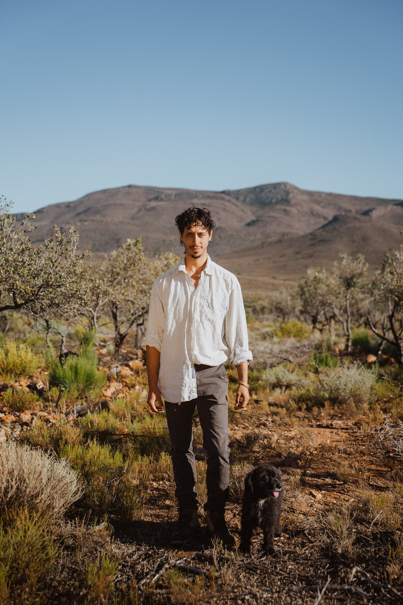
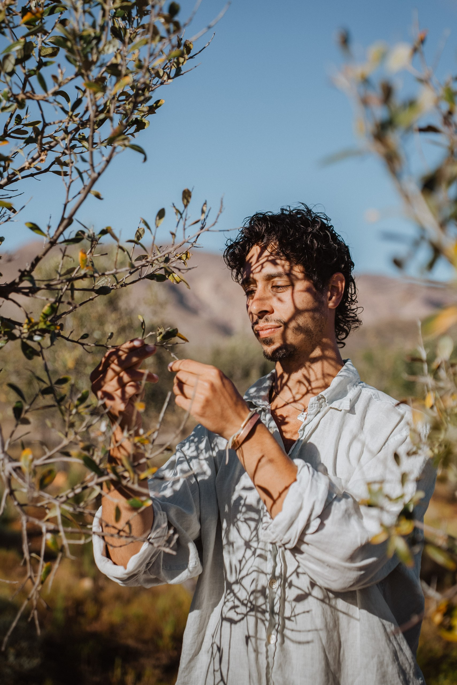

A rehabilitation story from the Swartberg Karoo — one block at a time.
Thirteen years ago, 16,000 olive trees were planted across forty irrigation blocks on VrischGewagt Boutique Olive Farm in the Swartberg Karoo — a bold vision for abundance in one of South Africa's most spectacular landscapes. At peak, the farm produced thousands of litres of cold-pressed extra virgin olive oil per year.
Then came years of drought, infrastructure failure, and operational strain. The irrigation network collapsed. Block by block, the trees fell into decline. Today, less than 1% bear fruit — not because the land gave up, but because the system did.
Nicolas Criticos — electrical engineer, farmer, and steward of this land — is bringing them back. Not with shortcuts, but with soil science, restored infrastructure, and patient, methodical care. Every bottle of Samsara olive oil directly funds this work.
Rehabilitating neglected olive trees is a multi-year, multi-layer process. It's not just about turning the taps back on — the trees have been stressed for years. Soil biology has collapsed, root systems are compromised, canopies are overgrown and unproductive. Real recovery requires a coordinated approach across several fronts simultaneously.
The full farm has 16,000 trees across 40 blocks. We are currently focused on the first 10 blocks — approximately 5,000 trees. Blocks 1–3 have completed irrigation restoration and are in active recovery. Blocks 4–10 are staged for rehabilitation. We are roughly halfway through phase one.
Hover over each block for details · Data pulled live from myLifeTracker
Sales from Samsara olive oil directly fund the rehabilitation — tools, labour, soil inputs, and the slow, relentless work of bringing these trees back. When you buy a bottle, you're not just getting oil. You're part of the story.